AI 티는 왜 날까요?
AI로 만든 화면은 보기만 해도 알아차릴 때가 많아요. 옅은 회색 바탕 위에 모서리가 둥근 흰 카드를 올리는 식의 모습이 자주 되풀이되거든요. 이런 화면을 워낙 자주 보다 보니 눈에 익었고, 사람들은 그걸 'AI 티가 난다'고 말해요.
발표자는 AI로 디자인한다고 AI 티가 꼭 나는 건 아니라고 봐요. 가장 큰 원인은 원하는 디자인을 AI에게 구체적으로 알려 주지 않는 데 있어요. 바탕색, 구역을 나누는 방식, 그림자를 쓸지, 어떤 버튼을 색으로 채울지 정해 주지 않으면 AI는 학습한 수많은 화면에서 가장 흔하고 무난한 모습을 골라 채워요. 그래서 누가 만들어도 결과가 비슷해져요.
01:15 화면의 부탁이 대표적이에요. 빨간색으로 칠한 '멋지게', '예쁘게', '전문가처럼'은 바이브 코딩에서 흔히 쓰는 말인데, 무엇이 예쁜지는 사람마다 달라요. 사람에게 '예쁘게 해 주세요'라고만 하면 그 사람도 자기 기준대로 만들 수밖에 없죠. AI도 같아요.
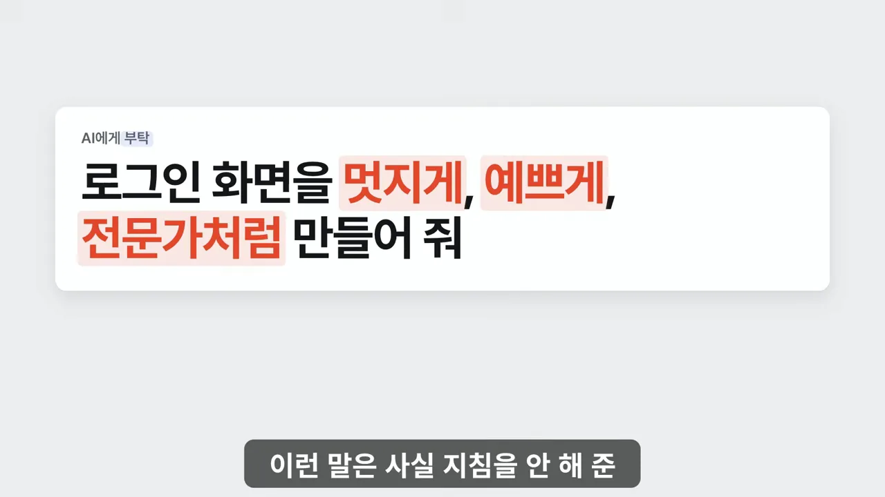
해법은 두 단계예요. 먼저 원하는 디자인을 정해서 '바탕은 흰색 하나, 그림자는 쓰지 않음'처럼 눈으로 확인할 수 있는 지침으로 적어요. 한 걸음 더 나아가, 그 지침이 실제로 구현된 결과물을 참고 자료로 함께 줘요. 아래 슬라이드 왼쪽이 지침(바탕 · 구역 · 그림자 · 채운 버튼)이고, 오른쪽이 그 지침대로 만든 버튼 · 검색칸 · 표예요. 둘을 묶어 '함께 제공'한다는 게 요점이에요.
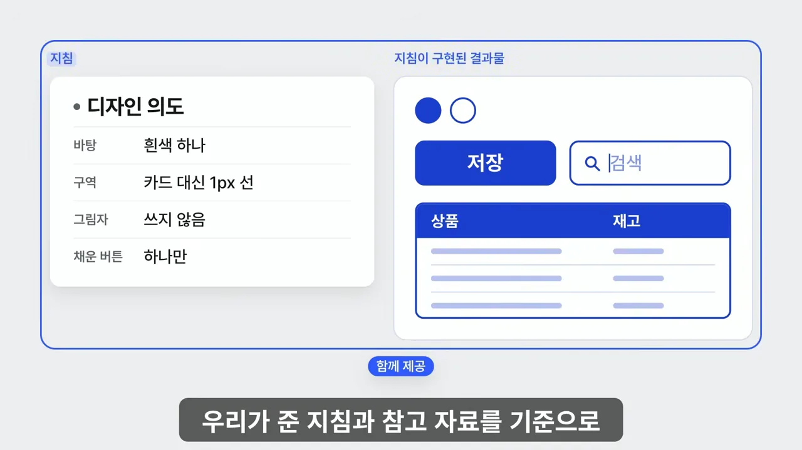
지침과 참고 자료는 이미 잘 만들어진 걸 가져다 쓸 수도, 직접 만들 수도 있어요. 영상은 둘 다 해 봐요. Meta가 공개한 디자인 시스템을 가져다 써 보고, 내 디자인 규칙을 직접 만들어 줘 보고, 마지막에 발표자가 만든 지침 파일을 한 줄씩 보여 줘요.
그냥 부탁한 여덟 화면
먼저 AI 티가 정확히 무엇인지 확인하려고, Claude Code에 디자인 얘기 없이 서로 전혀 다른 화면 여덟 개를 부탁했어요. 로그인, 설정, 매출 대시보드, 칸반 보드, 미용실 예약, 고객 상담, 주문서, 메모 앱 소개 홈페이지예요.
모델이 Fable 5.2일 때, 하나씩 보면 다 깔끔하고 그대로 써도 될 만큼 잘 만들었어요. 그런데 나란히 놓으니 여덟 개 중 여섯 개가 따뜻한 베이지색 바탕에 모서리가 둥근 흰 카드를 올린 모습이었어요. 아래 로그인 화면에서 빨간 테두리로 짚은 부분이 그 '둥근 흰 카드'예요.
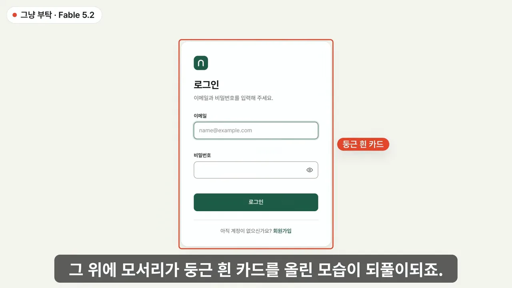
모델을 Opus 5.5로 바꿔 같은 여덟 가지를 부탁하자 바탕은 베이지 대신 옅은 회색이 가장 많았어요. 하지만 여덟 화면 모두 둥근 흰 카드를 올렸고, 버튼 모양은 화면마다 제각각이었어요. 아래 화면은 여덟 결과를 한 장에 모은 거예요. 화면 이름 옆의 빨간 숫자(10px부터 22px까지)가 화면마다 다 달라요.
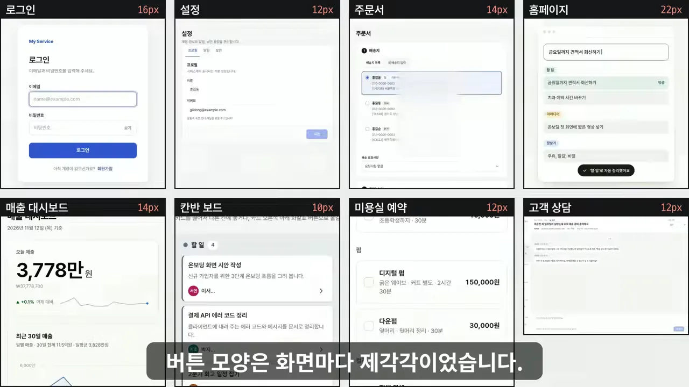
발표자는 AI가 정해지지 않은 곳을 채울 때 늘 고르는 모습을 기본값이라고 불러요. 모델이 바뀌면 기본값의 색은 바뀌지만, 기본값이 모든 화면에 되풀이되는 건 그대로예요. 그러니 AI 티는 못 만들어서 나는 티가 아니라, AI가 혼자 고른 기본값이 화면마다 되풀이되면서 나는 티예요. 화면 하나만 볼 때보다 여러 개를 나란히 놓을 때 더 잘 보이는 것도 그래서예요.
한 서비스 안에서 화면끼리 닮는 건 좋은 일이에요. 화면이 바뀌어도 같은 서비스라는 게 느껴지니까요. 문제는 전혀 다른 서비스까지 똑같아 보이는 거예요. 아래는 그냥 부탁한 화면마다 바탕색을 재 본 결과예요. 빨간 테두리를 친 미용실 예약(#f4efe7)과 홈페이지(#f5f1e8)는 서로 아무 관계 없는 서비스인데 거의 같은 베이지예요.
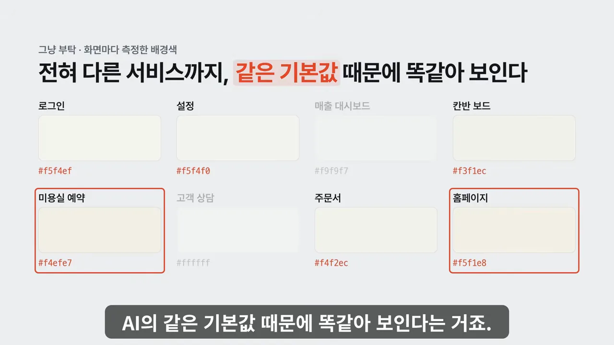
디자인을 말로 전하면
많은 사람이 하듯 부탁 끝에 원하는 디자인을 한 줄로 붙여 봤어요. 발표자는 이걸 '의도 한 줄'이라고 불러요. 이 한 줄에는 파랗게 칠한 분명한 말('두 가지만')과 빨갛게 칠한 막연한 말('단순하게')이 섞여 있어요. '짙은', '차분한'도 막연한 쪽이에요.
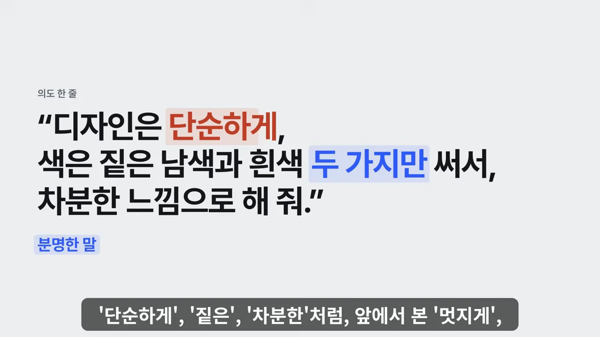
Fable 5.2에 여덟 화면을 다시 부탁하자 분명한 말은 지켜졌어요. 여덟 화면 모두 정확히 남색과 흰색 두 가지만 썼고, 베이지 바탕도 사라졌어요. 하지만 남색을 화면 넓게 쓴 경우가 많아서, 발표자 눈에는 차분하기는커녕 지금까지 본 것 중 인상이 가장 강했어요.
버튼과 남색은 직접 재서 비교했어요. 아래 화면은 버튼 여섯 개를 높이와 모서리 값과 함께 모은 거예요. 높이는 38px부터 56px까지, 모서리는 6px부터 999px(알약 모양)까지 흩어져 있어요.
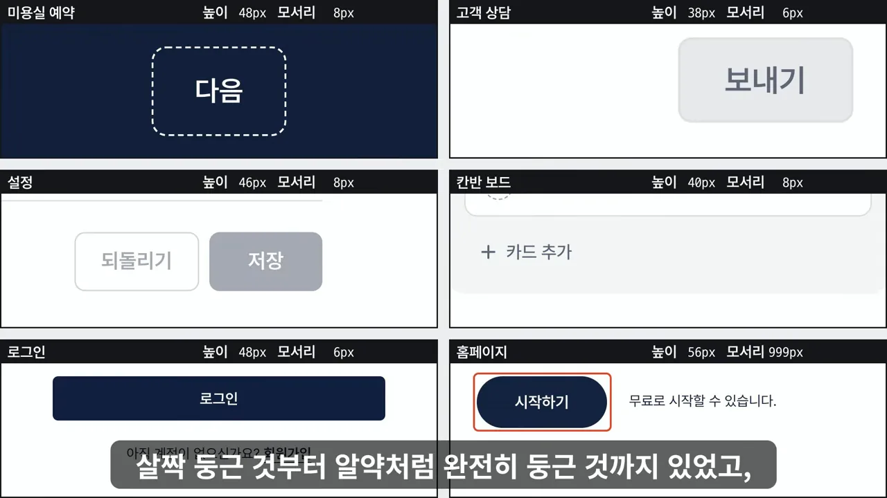
'짙은 남색'도 하나가 아니었어요. 아래 여덟 견본은 각 화면에서 AI가 고른 남색이에요. 색 코드를 보면 #12203f, #1b2845, #10203f처럼 화면마다 조금씩 달라요. 같은 값이 나온 건 미용실 예약과 고객 상담 두 칸(#14213d)뿐이에요.
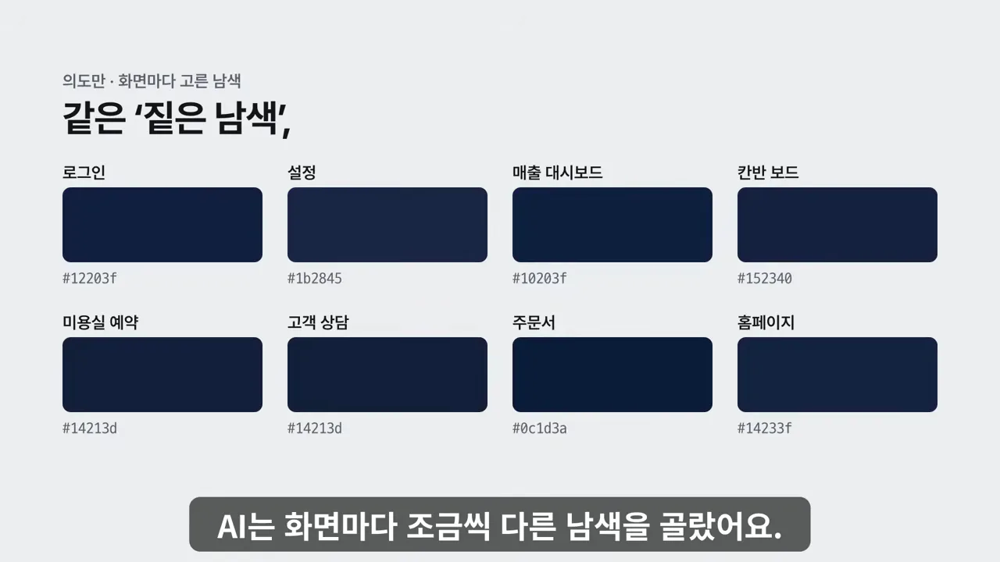
정리하면 분명하게 정한 두 가지(남색과 흰색만)는 여덟 화면이 모두 지켰어요. '짙은 남색'이나 '차분한 느낌'처럼 형용사로만 말한 부분은 화면마다 다르게 해석됐어요. 그래서 색이든 버튼 모양이든 형용사가 아니라 값으로, 즉 색 코드나 픽셀 같은 정확한 숫자로 정해 줘야 해요.
Meta의 Astryx를 써 보면
값을 정해서 AI에게 주는 도구는 이미 나와 있어요. Meta가 AI가 쓰기 좋게 만들어 공개한 디자인 시스템 Astryx예요. 공식 홈페이지 소개 첫 줄은 이래요.
An open source design system that's fully customizable and agent ready
마음대로 바꿔 쓸 수 있고, AI 에이전트가 바로 쓸 수 있는 오픈소스 디자인 시스템.
— astryx.atmeta.com 소개 첫 줄 (영상 07:14)
Astryx에는 화면 부품과 규칙 말고도 AI를 위한 게 더 들어 있어요. 일을 시작하기 전에 AI가 먼저 읽는 안내 파일, 화면을 만들 때 Astryx부터 찾아보게 하는 스킬 파일, AI가 직접 실행해서 규칙을 찾아보는 명령 도구예요. 아래 슬라이드 왼쪽 '규칙' 칸에 그 안내 파일의 규칙 예가 적혀 있어요. '페이지는 템플릿에서 시작', '<div> 쓰지 않기', '색·크기 값 직접 적지 않기', '다 만들면 astryx doctor로 점검' 같은 것들이에요.
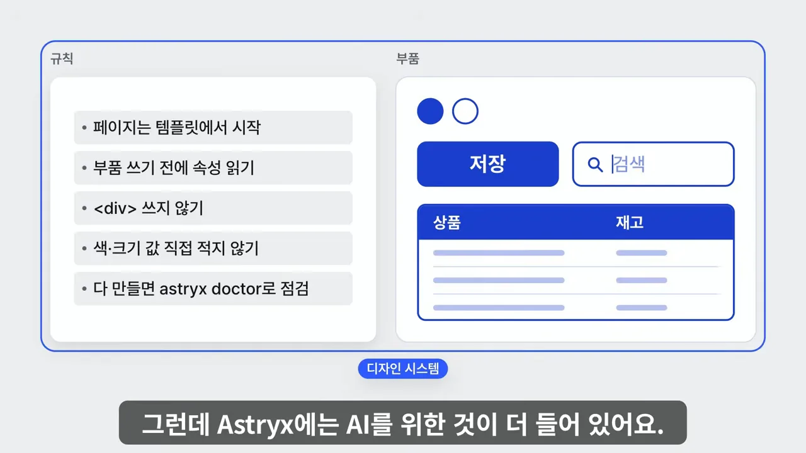
AI 입장에서 Astryx의 핵심은 세 가지예요.
- 색과 간격 같은 값이 한 파일에 정해져 있어요.
- 지켜야 할 규칙이 안내 파일에 적혀 있어요.
- 따라 할 예시 화면이 함께 들어 있어요.
Meta 팀은 블로그에서 AI를 '따라쟁이'라고 불러요. 아래 슬라이드 왼쪽이 Meta 팀이 처음 만든 예시, 오른쪽이 AI가 만든 화면이에요. 예시가 <div> 투성이에 부품을 거의 안 썼더니, AI가 만든 화면도 똑같이 <div> 투성이에 부품을 거의 안 썼어요. 그래서 예시를 하나하나 다시 다듬었고, AI가 만든 화면도 함께 나아졌대요.
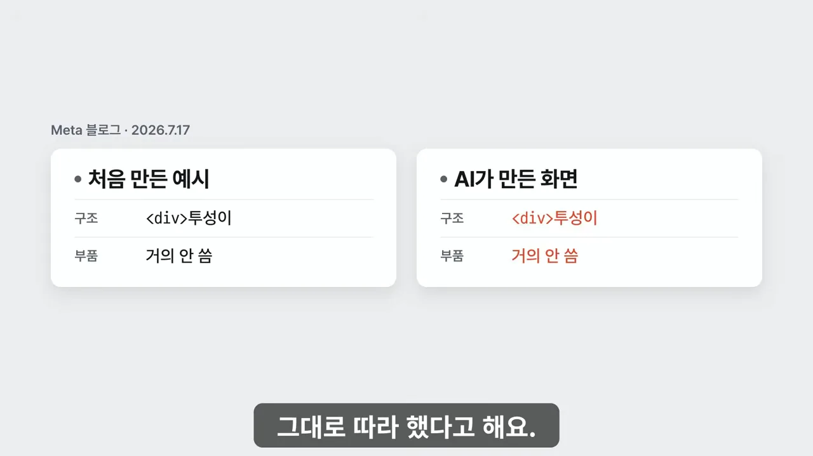
Astryx만 붙여서 부탁하면
부탁글은 그대로 두고 앞에 'Meta가 만든 오픈소스 디자인 시스템인 Astryx를 써서'만 붙였어요. 여덟 화면 모두 Astryx 기본 테마대로 흰색 · 회색 · 검정만 썼어요. 색이 하나로 맞춰지긴 했지만, AI가 고르던 모습이 Meta가 골라 둔 기본 모습으로 바뀐 것뿐이에요. 그냥 부탁했을 때보다 더 밋밋해진 화면도 있었어요.
반대로 주문서는 Astryx에 들어 있는 결제 화면 예시를 가져와 시작했어요. 아래 화면 오른쪽 '가져온 예시' 칸에 AI가 실행한 템플릿 명령이 보여요. 그 덕분에 배송지 · 배송 방법 · 할인 쿠폰이 구역별로 나뉘고, 오른쪽에 결제 금액이 따로 정리된 짜임새 있는 주문서가 됐어요.
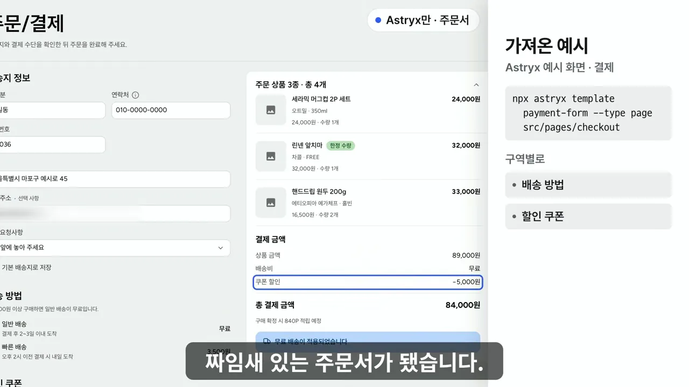
의도 한 줄과 Astryx를 함께 주면
여덟 화면이 Astryx의 같은 부품을 쓰니 버튼은 한 제품처럼 맞았어요. 아래 네 버튼 위에 적힌 값을 보면 모서리는 모두 18px, 글자는 모두 14px이고 높이만 32px과 36px 두 가지예요.
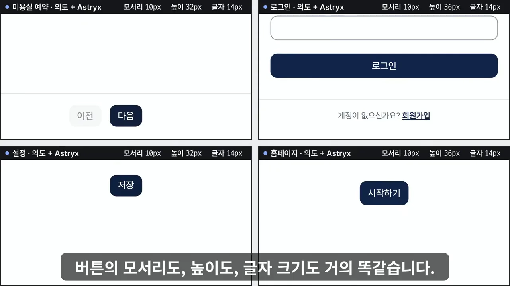
그런데 남색은 의도만 줬을 때처럼 여기서도 화면마다 달랐어요. 아래 여덟 견본 중 같은 값(#14213d)은 칸반 보드와 미용실 예약 두 칸뿐이고, 나머지는 모두 다른 색이에요. 버튼은 Astryx에 값으로 정해져 있었지만, 남색은 '짙은 남색'이라는 말뿐이라 AI가 화면마다 새로 고른 거예요.
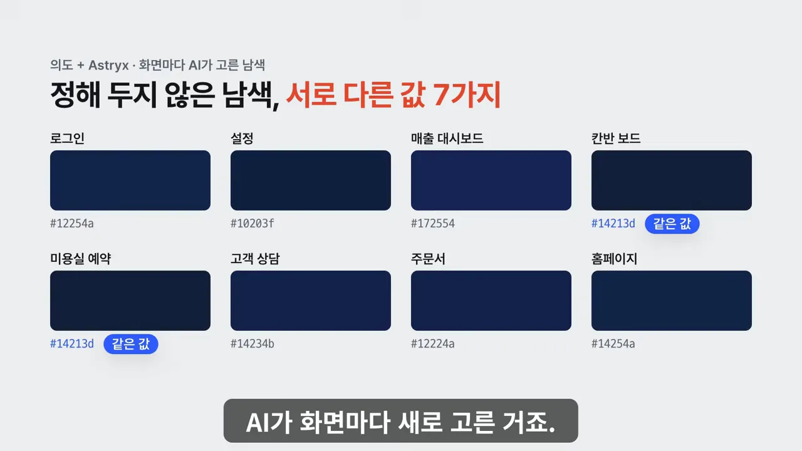
둘을 함께 줘서 생긴 문제도 있었어요. 설정 화면과 홈페이지는 의도만 줬을 때보다 오히려 밋밋해졌어요. 아래 왼쪽 '의도만' 홈페이지는 큰 제목과 버튼이 있는 소개 화면인데, 오른쪽 '의도 + Astryx'는 가운데 작은 제목과 버튼만 남았어요. AI가 의도는 색만 반영하고 화면 구성은 Astryx 예시를 그대로 따라 했기 때문이에요.
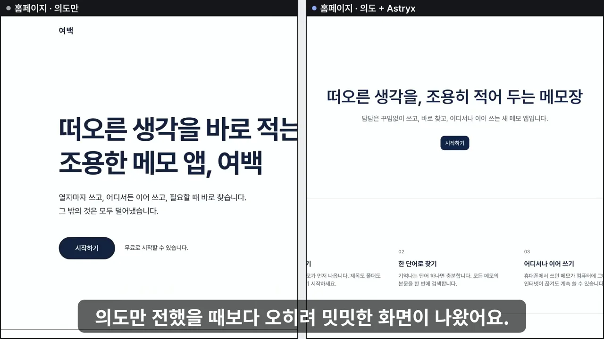
세 실험을 정리하면 이래요.
| 준 것 | 버튼 | 남색 | 화면 모습 |
|---|---|---|---|
| 의도 한 줄만 | 화면마다 흩어져요 | 화면마다 흩어져요 | 인상이 강하고 제각각이에요 |
| Astryx만 | Astryx 부품으로 맞아요 | 남색 없이 흰색 · 회색 · 검정 | Meta가 정한 모습이에요 |
| 의도 + Astryx | 한 제품처럼 맞아요 | 정해 두지 않아서 화면마다 달라요 | Astryx 예시를 따라 밋밋해진 화면도 있어요 |
내 디자인을 파일 세 개로
지금까지 실험을 놓고 보면, 지침과 그 지침이 구현된 결과물을 함께 주는 방법 자체는 효과가 있었어요. 다만 AI는 참고 자료로 받은 디자인 시스템을 그대로 따라 만들기 때문에, 결과물의 정체성도 그 디자인 시스템에 묶여요. 아래 화면 오른쪽 'Meta가 정한 것' 칸이 그걸 보여 줘요. 지침(AGENTS.md)도, 예시 화면(Astryx 템플릿)도 Meta가 정한 거예요.
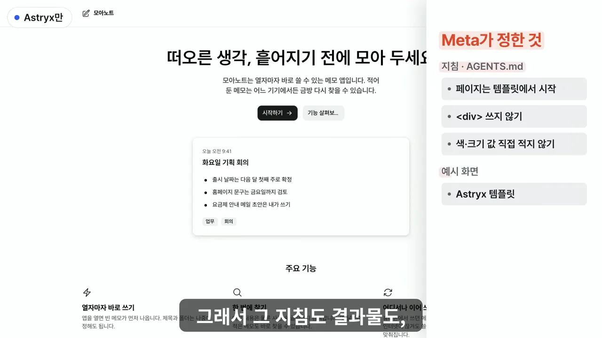
Astryx 소개 문구의 '마음대로 바꿔 쓸 수 있다'가 바로 실마리예요. Astryx에서 가져올 건 Meta의 디자인이 아니라 짜임새예요. 아래 세 칸처럼 값은 한 파일에, 규칙은 안내 파일에, 따라 할 예시 화면은 함께 두는 구조죠. 이 세 칸을 Meta의 내용 대신 내 디자인으로 채우면 돼요.
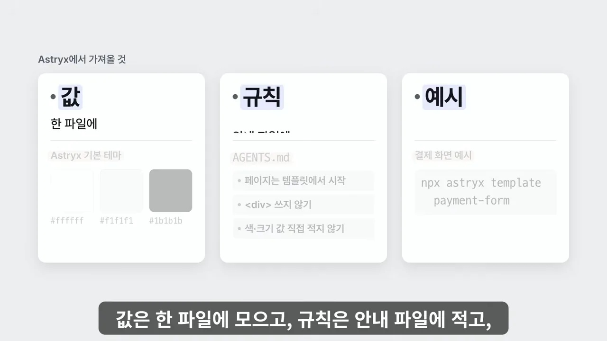
원리는 하나예요. AI 티는 AI가 혼자 고른 기본값이 화면마다 되풀이되면서 나는 티라고 했죠. 그렇다면 AI가 혼자 고르던 자리를 내가 원하는 모습으로 미리 채워 두면 돼요. 발표자는 이걸 네 단계로 나눠요.
1. 기본값 찾기
AI에게 화면을 여러 개 만들게 해서 나란히 놓고, 화면마다 되풀이되는 기본값을 찾아요. 앞 실험에서 찾은 건 아래 체크 목록의 세 줄이에요. 베이지나 회색의 옅은 바탕, 모서리가 둥근 흰 카드, 화면마다 다른 버튼과 남색. 줄마다 '원하는 모습' 칸이 비어 있는데, 이 목록이 곧 내가 직접 정해 줘야 할 자리의 목록이에요.
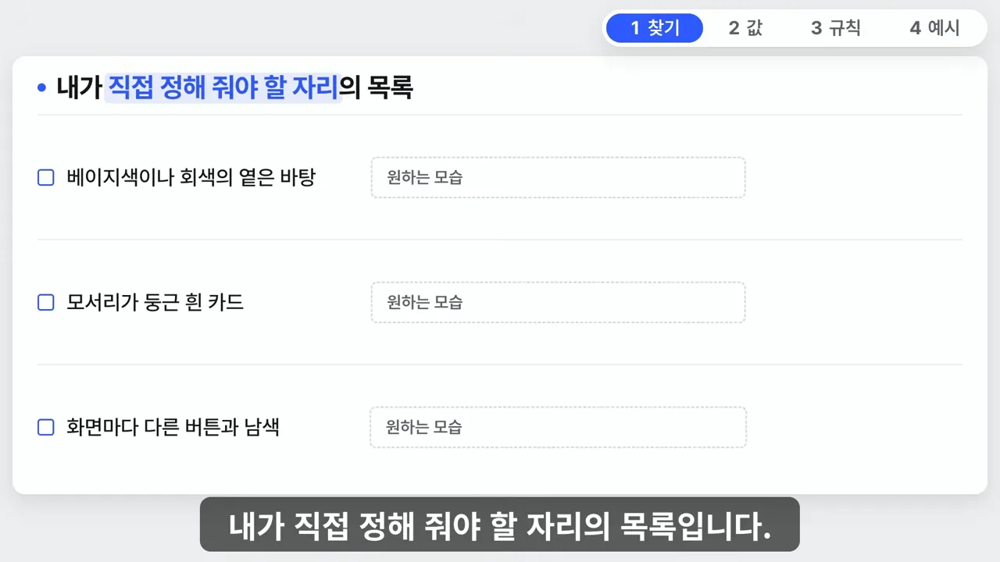
2. 값 파일 만들기
찾은 자리마다 원하는 모습을 정해서 한 파일에 값으로 적어요. 발표자가 만든 건 화면에 쓰는 색과 크기를 한데 모은 design/tokens.css예요. 아래 화면이 그 색 부분인데, 색은 딱 여섯 가지예요. 색마다 CSS(Cascading Style Sheets) 변수로 이름을 붙였고, 오른쪽 주석에 어디에 쓰는지 적었어요.
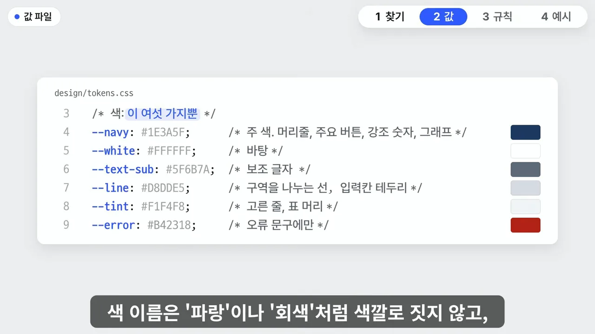
간격은 4의 배수만 쓰기로 했어요. 아래처럼 --sp-1(4px)부터 --sp-12(48px)까지 일곱 개뿐이에요. 글자 크기는 다섯 단계, 모서리는 모두 --radius: 2px, 버튼과 입력칸의 높이는 모두 40px이에요.
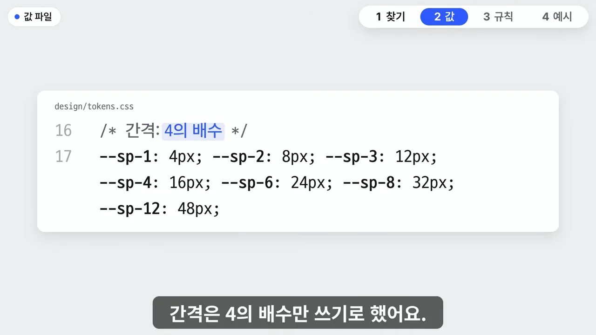
앞에서 '짙은 남색'이라는 말 하나가 여덟 가지 남색으로 흩어졌던 걸 떠올리면, 정확한 색 코드 하나가 왜 필요한지 알 수 있어요.
3. 안내 파일에 규칙 적기
AI 코딩 도구는 일을 시작하기 전에 프로젝트의 안내 파일을 먼저 읽고, 도구마다 그 파일 이름이 정해져 있어요. Claude Code는 CLAUDE.md를 읽고, 앞에서 본 Astryx가 깔아 주는 AGENTS.md도 이런 파일이에요. 발표자의 CLAUDE.md는 아래처럼 다섯 부분으로 나뉘어요.
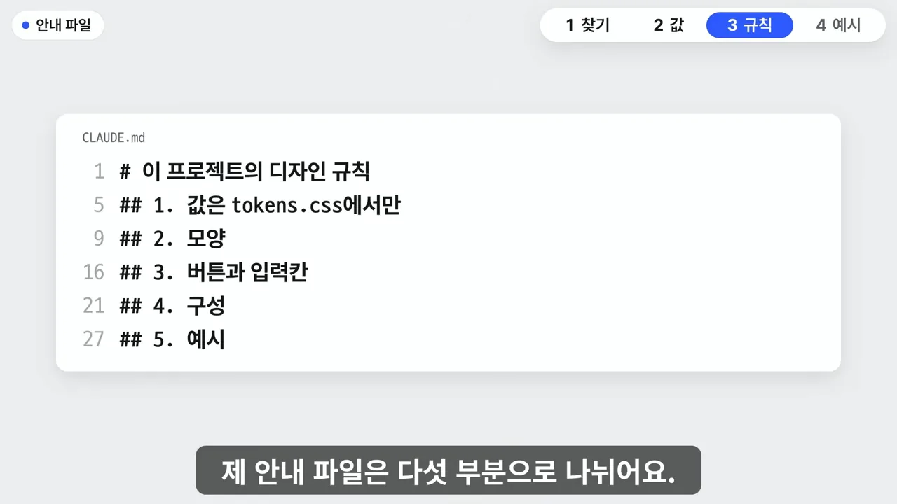
아래가 그 파일 전체예요. 부분마다 무엇을 적었는지 정리하면 이래요.
- 값은 tokens.css에서만 — 색 · 글자 크기 · 간격 · 모서리 · 높이는 그 파일의 변수로만 쓰고, 다른 파일에 색 코드나 px 값을 직접 적지 않아요. 필요한 값이 없으면 새로 만들지 말고 있는 값 중에서 골라요.
- 모양 — 앞에서 찾은 기본값마다 대신 쓸 모습을 적었어요. 바탕은 흰색 하나, 구역은 카드로 감싸지 말고 1px 선으로 나눠요. 그림자 · 그라데이션 · 반투명은 쓰지 않고, 모서리는 모두 2px로 알약 모양은 만들지 않아요. 맨 위에는 남색 머리줄을 두고 흰 글자로 서비스 이름을 써요.
- 버튼과 입력칸 — 높이는 모두 같게(40px), 화면에서 가장 중요한 버튼 하나만 남색으로 채우고 나머지는 흰 바탕에 남색 테두리예요.
- 구성 — 부탁한 정보와 기능만 넣어요. 부탁하지 않은 비교 수치, 배지, 장식 아이콘, 그림, 이모지, 다크 모드는 넣지 않아요. 상태는 색이 아니라 글자와 모양으로 나누고, 그래프는 남색 한 가지로 그려요.
- 예시 — 새 화면은
examples/의 화면을 따라요.
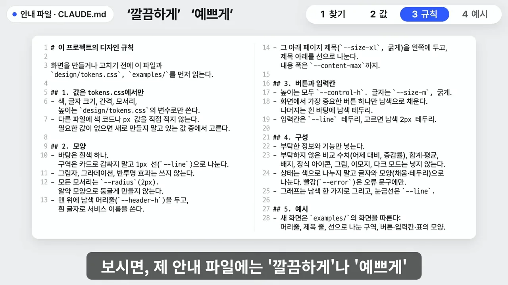
4. 예시 화면 만들기
값과 규칙대로 화면 하나를 직접 만들어 AI가 따라 할 예시로 줘요. Astryx의 예시를 따르게 했더니 Meta의 모습이 나왔으니, AI가 따라 할 예시는 내 디자인으로 만든 내 화면이어야 해요. 발표자가 만든 예시는 쇼핑몰 회원 목록 화면이에요. 아래 화면 맨 위 남색 머리줄, '회원' 제목 줄, 이름이나 이메일로 찾는 검색칸, 가운데 회원 표, 오른쪽 회원 정보칸까지 안내 파일에 적은 모양이 한 화면에 다 들어 있어요. 채운 버튼은 오른쪽 위 '회원 추가' 하나뿐이에요.
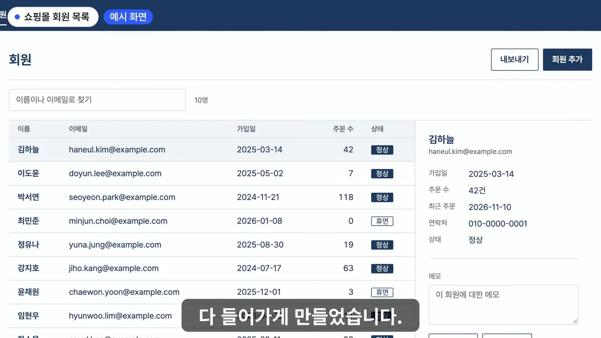
결과: 파일마다 맡은 일
세 파일을 프로젝트 폴더에 넣어 두면 준비가 끝나요. 아래처럼 안내 파일은 CLAUDE.md, 값 파일은 design/tokens.css, 예시 화면은 examples/member-list/예요. 그다음부터는 화면을 부탁할 때 디자인 이야기를 따로 하지 않아도 돼요.
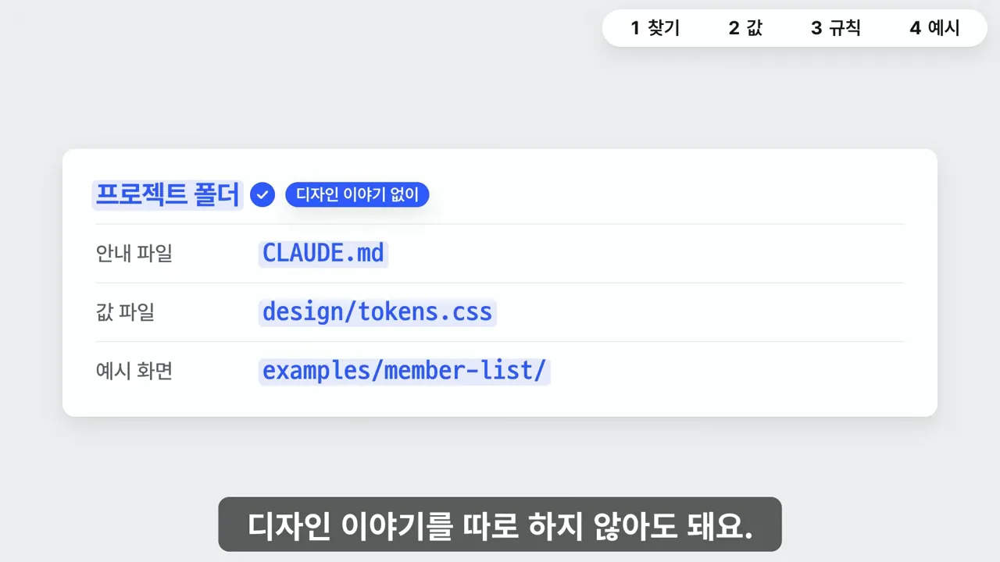
세 파일을 처음부터 손으로 다 쓸 필요도 없어요. 발표자는 찾은 기본값 목록과, 기본값 대신 원하는 모습을 AI에게 알려 주고 초안을 AI와 함께 만들었어요.
결과: 한 서비스처럼
부탁글은 한 글자도 바꾸지 않았고, 모델도 처음 그냥 부탁했던 Opus 5.5 그대로예요. 여덟 화면 모두 흰 바탕에 맨 위 남색 머리줄이었고, 둥근 흰 카드는 하나도 없었어요. 아래는 그중 여섯 화면의 버튼이에요. '저장', '시작하기', '카드 추가', '답장 보내기', '로그인', '124,800원 결제하기' 모두 같은 남색, 같은 모서리, 같은 높이예요. 남색도 여덟 화면 모두 값 파일에 적은 색 하나였어요.
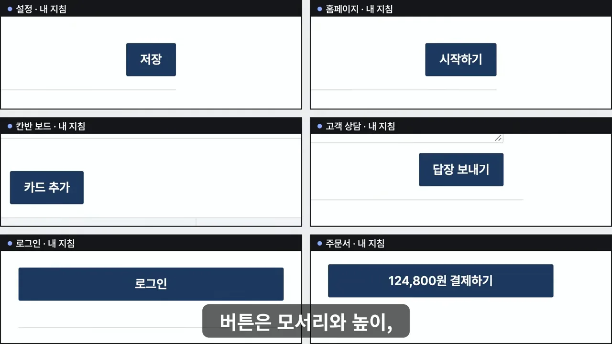
아래는 같은 Opus 5.5의 로그인 화면을 나란히 놓은 거예요. 왼쪽 '그냥 부탁'은 옅은 회색 바탕에 둥근 흰 카드와 파란 버튼이고, 오른쪽 '내 지침'은 흰 바탕, 맨 위 남색 머리줄, 남색 로그인 버튼에 회원가입은 테두리만 있는 버튼이에요.
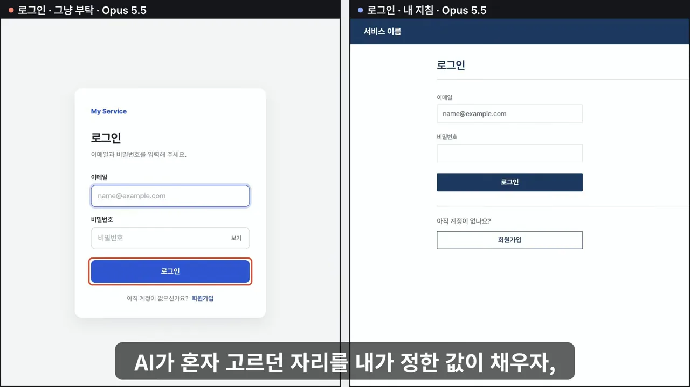
화면 하나만 보면 그냥 부탁했을 때도 잘 만들었어요. 하지만 나란히 놓으면 그냥 부탁한 화면은 어디서 본 듯한 AI의 모습이고, 세 파일을 준 화면은 발표자가 정한 한 서비스의 모습이에요.
파일마다 맡은 일
세 파일이 각각 무슨 역할을 했는지 보려고 같은 여덟 화면을 두 번 더 만들었어요. 아래처럼 '값 파일만'(그 값만 쓰라는 한 줄을 붙여서), '값 + 규칙'(예시 화면은 빼고), 그리고 앞의 '값 + 규칙 + 예시' 세 조건이에요.
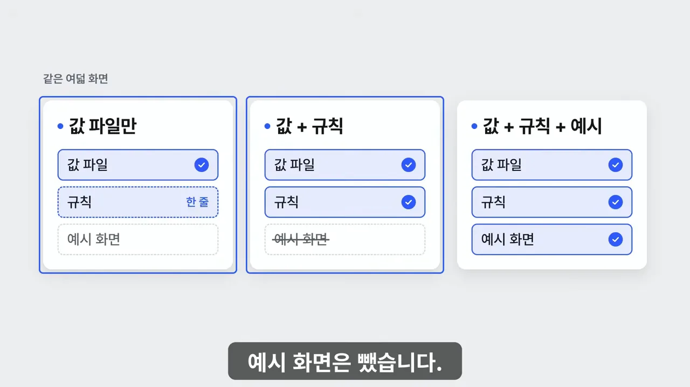
값 파일만 줘도 색과 모서리는 이미 맞았어요. 여덟 화면 모두 흰 바탕에 같은 남색이었고 둥근 카드도 없었어요. 하지만 페이지 제목은 크기도 자리도 달랐어요. 아래 첫 그림처럼 매출 대시보드는 제목을 머리줄 안에 18px로 넣었고, 로그인(24px)과 홈페이지(32px)는 머리줄 아래에 크기도 다르게 뒀어요. 안내 파일을 더하자 두 번째 그림처럼 제목이 모두 24px로 머리줄 아래 왼쪽에 놓였어요.
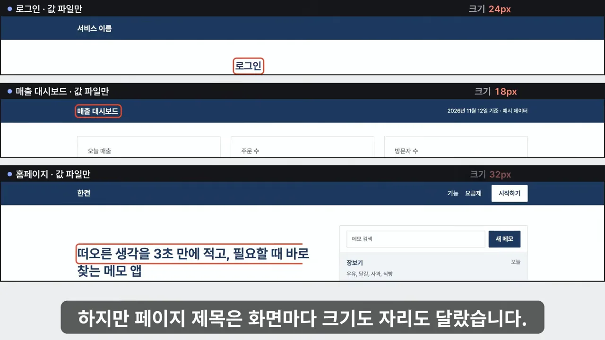
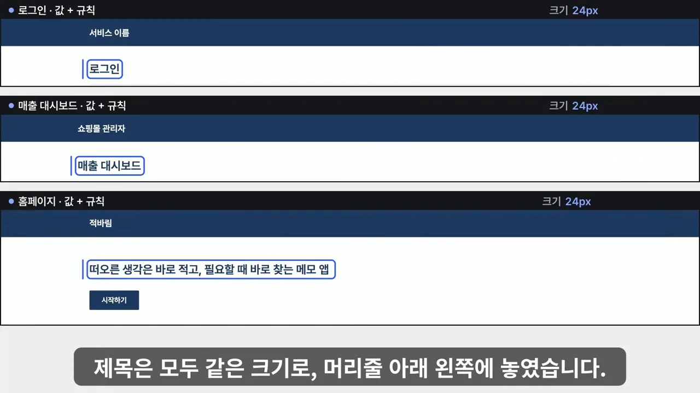
마지막으로 예시 화면까지 주자 여덟 화면 모두 제목이 거의 같은 자리에 놓였어요. 세 파일이 맡은 일을 한 그림으로 모으면 이래요. 아래로 갈수록 파일이 하나씩 더해지고, 오른쪽이 그때 새로 맞춰진 것이에요.
여덟 화면은 여전히 서로 닮았어요. 다만 이번에 되풀이된 건 AI가 고른 기본값이 아니라 발표자가 정한 값이에요.
정리: 네 단계
마지막 화면이 순서를 다시 짚어 줘요. 여러 화면을 나란히 놓고 AI의 기본값을 찾고(1 찾기), 기본값이 있던 자리마다 원하는 모습을 값 파일에 적고(2 값), 규칙을 안내 파일에 적고(3 규칙), 예시 화면 하나를 직접 만들어 함께 넣어요(4 예시).
- 찾기 — 여러 화면을 나란히 놓고 되풀이되는 AI의 기본값을 찾아요.
- 값 — 그 자리마다 원하는 모습을 값 파일에 색 코드와 픽셀로 적어요.
- 규칙 — 무엇을 하고 하지 않는지를 안내 파일에 적어요.
- 예시 — 값과 규칙대로 화면 하나를 직접 만들어 함께 넣어요.
Astryx든 다른 디자인 시스템이든 먼저 내가 원하는 디자인을 값과 규칙 예시 화면으로 적어 두는 것부터 시작해 보세요.
— 영상 17:14